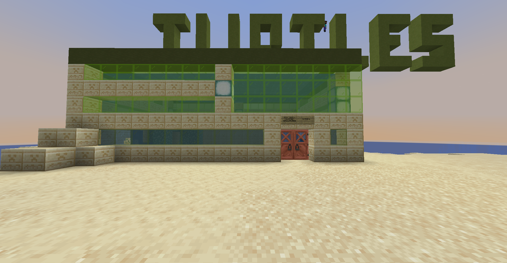

Dogui Heavy Industries Incorporated
Dogui Heavy Industries Incorporated¹ (DHI Inc.) is a fictional Horilandese company. Its main headquarters are located in Fucking, the capital city of Horiland.
The company was founded in June 2024 as Dogui Heavy Coding Industries, with its first part of the name inheriting from Dogui, the name of Lexibyte’s dog plushie which at the time was the logo of StuffyXP. Its first mention was on a message on a Discord Server in which Lexibyte was in, which had attached the Stuffy Vlogs background from the time.
In July 2024, the company was renamed Dogui Heavy Industries Limited, having its own motto:
When the tables suddenly turn at the Dogui Heavy Industries Headquarters, it’s when you know there’s a certified Stuffy Moment
As of March 2025, Dogui Heavy Industries has changed from a Limited Company to a Incorporation, hence its current name. It is one of the most profitable businesses founded and ran in Horiland. It has been said that works made by DHI’s employees are prone to Lexibyte Moments.

Headquarters of DHI Inc. in Fucking, Horiland
Subsidiaries
DHI Turtles
DHI Turtles LLC (fully known as Dogui Heavy Industries Turtle Research & Observatory Center LLC) is a subsidiary of Dogui Heavy Industries Incorporated, its main goal is to rescue, preserve and study Horilandese turtles.

Headquarters of DHI Turtles in Fucking, Horiland
DHI Movies
DHI Movies Corp. (fully known as Dogui Heavy Industries Movie Studio Corporation) is a Horilandese film-making company, subsidiary of Dogui Heavy Industries Incorporated. The company’s headquarters are located in Redlock, Ture, Horiland.
DHI Movies Corp. has released various films related to the Horiland country, honorable filmography are “Ture: The Nuke of the ‘25” and its prequel “Jell: a Ture of the Past”, both recieving a box office amount of LXL. 459M separately.
Loreside
The company was founded in early 2003 as Dogui Heavy Coding Industries (whose purposes was split into a subsidiary called DHISoft), and became the most profitable business in StuffyLand December 2010.
The company has a history of filing for Chapter Nine Bankruptcy two times in 2013 and 2018 respectively. Both being due to loss of profit due to bad quality of products, the most notable case being in 12 January 2005 where the company’s products were affected by computer glitches (Lex Moments), the company slowly kept losing money until 2013 and gained a bad reputation.
In July 2013 the company filed for Chapter Nine Bankruptcy, which allowed them to try to make a plan to gain enough money to cover up the debt (LXL. 250,000,000).
In December 2013, a new CEO was put in place, they used all their salary to fund DHI Turtles LLC, an organization to protect, save and rescue LexLandese turtles. The company paid off with donations recieved from DHI Turtles, the Horilandese Goverment donated LXL. 300,000,000 as a way to keep the company on business. The company regained its reputation after making a promise to use 67% of their money to help DHI Turtles.
After the Economy Crash of 2017, DHI suffered a loss of LXL. 761,000,000 which made both DHI and DHI Turtles file for Bankruptcy Chapter Nine again, not only for the economy crash, poor employee and product management resulted in a 2% layoff which made DHI loss about LXL. 500,000. Another CEO was put in place to better manage money and products, as well as internal company disputes.
The company was barely keeping itself alive in 2019 until COVID-19 struck StuffyLand, DHI founded DHI Movies, a movie studio for the citizen’s entertainment while at home.
The company successfully recovered from the crash (in fact, was only one of the two to do so) and gained around LXL 1B due to the massive success of DHI Movies, and several donations for DHI Turtles. The company became the most profitable business in the country again in August 2021 due to a new CEO, Lex.
¹↑ Formerly known as Dogui Heavy Industries Limited (DHI Ltd.) and Dogui Heavy Coding Industries (DHCI).